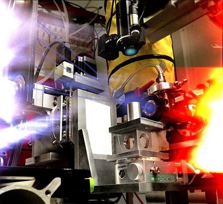

Sample Goniometer  D-line 5-axis sample goniometer comprising horizontal and vertical translations, incident angle, tilt correction, and rotation around the surface normal. (Image courtesy of Kaifu Bian, Cornell). GISAXS and GIWAXS typically require an incident angle resolution of a hundredth of a degree, in some cases even better. This can be achieved on a small goniometer, if spatial constraints are an issue. There are also elegant solutions for bulky and/or heavy sample environments. I would be happy to consult you on how to make best use of available space for the intended mission. |